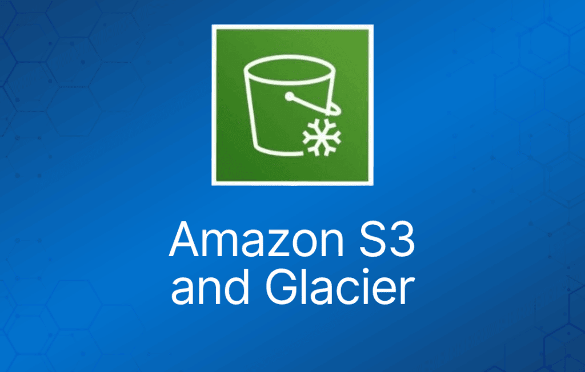
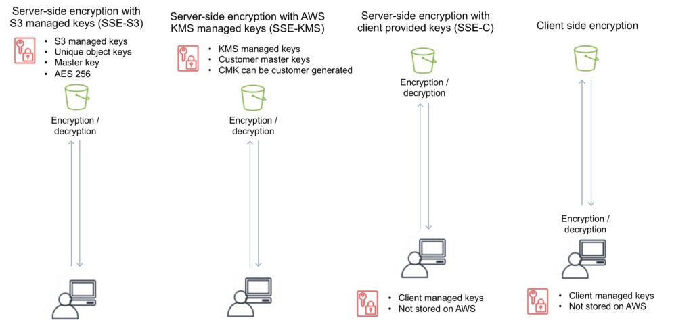

Amazon S3 是一种对象存储，可以从 Internet 上的任何地方存储和检索任意数量的数据。
它是一种简单的存储服务，以极低的成本提供极高持久性、高可用且几乎无限扩展的数据存储基础设施。
Amazon S3 采用分布式架构，对象在 Amazon S3 区域内跨多个设施（AZ）的多台设备上冗余存储。
Amazon S3 是一个简单的基于键（key）的对象存储。
键可以是任意字符串，并且可以构造成模拟层次结构的形式。
另外，你也可以使用 S3 Object Tagging 来组织跨所有 S3 bucket 和/或前缀的数据。
Amazon S3 提供简单的、基于标准的 REST Web 服务接口，设计上可与任何互联网开发工具包配合使用。
文件大小可以从 0 字节到 5TB。
单次 PUT 可上传的最大对象为 5 GB。
对于大于 100 MB 的对象，请使用 Multipart Upload 功能。
对象更新是原子性的——读取更新后的对象时，你要么得到新对象，要么得到旧对象，永远不会得到部分或损坏的数据。
存储容量无上限。
建议通过 SDK 和 API 访问 S3（控制台也是使用 API）。
针对特定操作的事件通知，可以发送告警或触发动作。
通知可以发送到：
- SNS Topic。
- SQS Queue。
- Lambda 函数。
- 需要先配置 SNS/SQS/Lambda，再配置 S3。
- S3 不额外收费，但你需要为 SNS、SQS 和 Lambda 付费。
Requester pays 功能让请求者付费（同时取消匿名访问）。
可以提供对对象的限时访问。
对新对象的 PUT 提供写后读一致性（read after write consistency）。
对覆盖性 PUT 和 DELETE 提供最终一致性（eventual consistency，需要时间传播）。
S3 上只能存储文件（对象）。
HTTP 200 状态码表示成功写入 S3。
S3 数据由以下部分组成：
- 键（名称）。
- 值（数据）。
- 版本 ID。
- 元数据（metadata）。
- 访问控制列表（ACL）。
Amazon S3 会自动扩展以应对高请求速率。
例如，你的应用可以在 bucket 中的每个前缀下达到至少每秒 3,500 次 PUT/POST/DELETE 和 5,500 次 GET 请求。
bucket 中前缀的数量没有限制。
对于读密集型请求，你还可以使用 CloudFront 边缘站点来为 S3 卸载流量。
附加功能
Amazon S3 提供的附加功能包括：
| S3 附加功能 | 工作方式 |
| Transfer Acceleration | 通过反向利用 CloudFront 加速数据上传 |
| Requester Pays | 由请求者而非 bucket 所有者支付请求和数据传输费用 |
| Tags | 为对象分配标签，用于托管、计费、安全等 |
| Events | 当 bucket 中发生特定事件时，触发通知到 SNS、SQS 或 Lambda |
| Static Web Hosting | 简单且可大规模扩展的静态网站托管 |
| BitTorrent | 使用 BitTorrent 协议检索任何公开可用的对象，自动生成 .torrent 文件 |
| Storage Class Analysis | 分析存储访问模式，帮助你决定何时将合适的数据转移到合适的存储类别 |
| Storage Lens | 提供组织范围内的对象存储使用情况和活动趋势可见性，并给出改善成本效益和应用数据保护最佳实践的可执行建议 |
| S3 Object Lambda | 将你自己的代码添加到 S3 GET 请求中，在数据返回给应用时对其进行修改和处理 |
使用场景
典型使用场景包括：
- 备份与存储——为他人提供数据备份和存储服务。
- 应用托管——提供部署、安装和管理 Web 应用的服务。
- 媒体托管——构建冗余、可扩展且高可用的基础设施，托管视频、照片或音乐的上传和下载。
- 软件分发——托管供客户下载的软件应用。
- 静态网站——你可以配置一个从 S3 bucket 运行的静态网站。
S3 是持久的、高持久性的数据存储。
持久性数据存储（persistent data store）是非易失性存储系统，断电后数据仍然保留。
这与临时数据存储（transient）和易失数据存储（ephemeral）形成对比，后者在断电时会丢失数据。
下表描述了持久、临时和易失数据存储，以及应使用的 AWS 服务：
| 存储类型 | 描述 | 示例 |
| 持久性数据存储 | 数据具有持久性，在重启、重新启动或电源循环后仍然存在 | S3、Glacier、EBS、EFS |
| 临时数据存储 | 数据只是临时存储，并传递给另一个进程或持久存储 | SQS、SNS |
| 易失数据存储 | 系统停止时数据丢失 | EC2 Instance Store、Memcached (Elasticache) |
Bucket
文件存储在 bucket 中：
- bucket 可以视为对象的容器。
- bucket 是对象的扁平容器。
- 它不提供对象的层次结构。
- 你可以使用对象键名（前缀）来模拟文件夹。
默认每个账户 100 个 bucket。
bucket 中可以存储无限数量的对象。
你可以在 bucket 中创建文件夹（仅通过控制台可用）。
不能创建嵌套 bucket。
bucket 所有权不可转让。
bucket 名称创建后不能更改。
如果 bucket 被删除，其名称会重新变为可用。
bucket 名称是访问该 bucket 的 URL 的一部分。
S3 bucket 是区域特定的。
S3 是全局统一的命名空间，因此名称必须全局唯一。
URL 格式为：https://s3-eu-west-1.amazonaws.com/<bucketname>.
可以将一个 bucket 备份到另一个账户中的另一个 bucket。
可以为 bucket 启用日志记录。
bucket 命名规则：
- bucket 名称长度至少 3 个字符，最多 63 个字符。
- bucket 名称必须以小写字母或数字开头和结尾。
- bucket 名称必须是一个或多个以句点分隔的标签。
- bucket 名称可以包含小写字母、数字和连字符。
- bucket 名称不能使用 IP 地址格式。
为了获得更好的性能、更低的延迟和更低的成本，请在靠近客户端的地方创建 bucket。
对象（Object）
每个对象都通过唯一的键（ID 或名称）存储和检索。
S3 中的对象通过以下信息唯一标识和寻址：
- 服务端点（service endpoint）。
- bucket 名称。
- 对象键（名称）。
- 可选的对象版本。
存储在 bucket 中的对象永远不会离开其存储的区域，除非你将它们移到另一个区域或启用跨区域复制。
你可以在上传对象时以及之后的任何时间使用 AWS Management Console 定义对象权限。
子资源（Subresource）
子资源从属于对象，它们不独立存在，而是始终与另一个实体（如对象或 bucket）关联。
与 bucket 关联的子资源（配置容器）包括：
- Lifecycle——定义对象的生命周期。
- Website——静态网站托管的配置。
- Versioning——在对象变更时保留多个版本。
- 访问控制列表（ACL）——控制对 bucket 的访问权限。
- Bucket Policy——控制对 bucket 的访问。
- 跨域资源共享（CORS）。
- 日志记录（Logging）。
与对象关联的子资源包括：
- ACL——定义访问对象的权限。
- Restore——恢复归档对象。
跨域资源共享（CORS）
用于在连接到主源（origin）时允许对不同源的请求。
除非源使用 CORS 头（例如 Access-Control-Allow-Origin）允许该请求，否则请求会失败。
必须启用正确的 CORS 头。
在 S3 bucket 上指定 CORS 配置。
存储类别
S3 有六种存储类别。
- S3 Standard（持久、立即可用、频繁访问）。
- S3 Intelligent-Tiering（自动将数据移动到最具成本效益的层级）。
- S3 Standard-IA（持久、立即可用、不频繁访问）。
- S3 One Zone-IA（不频繁访问数据的更低成本选择，弹性较低）。
- S3 Glacier（归档数据，检索时间为几分钟到几小时）。
- S3 Glacier Deep Archive（长期保留的最低成本存储类别）。
下表列出了每种 Amazon S3 存储类别的详细信息：
| S3 Standard | S3 Intelligent Tiering | S3 Standard-IA | S3 One Zone-IA | S3 Glacier Instant Retrieval | S3 Glacier Flexible Retrieval | S3 Glacier Deep Archive | |
| 设计持久性 | 99.999999999%
（11 个 9） | 99.999999999%
（11 个 9） | 99.999999999%
（11 个 9） | 99.999999999%
（11 个 9） | 99.999999999%
（11 个 9） | 99.999999999%
（11 个 9） | 99.999999999%
（11 个 9） |
| 设计可用性 | 99.99% | 99.9% | 99.9% | 99.5% | 99.9% | 99.99% | 99.99% |
| 可用性 SLA | 99.9% | 99% | 99% | 99% | 99% | 99.% | 99.9% |
| 可用区数量 | ≥3 | ≥3 | ≥3 | 1 | ≥3 | ≥3 | ≥3 |
| 每个对象的最低容量收费 | N/A | N/A | 128 KB | 128 KB | 128 KB | 40 KB | 40 KB |
| 最低存储时长收费 | N/A | N/A | 30 天 | 30 天 | 90 天 | 90 天 | 180 天 |
| 检索费用 | N/A | N/A | 按检索的 GB 计费 | 按检索的 GB 计费 | 按检索的 GB 计费 | 按检索的 GB 计费 | 按检索的 GB 计费 |
| 首字节延迟 | 毫秒级 | 毫秒级 | 毫秒级 | 毫秒级 | 毫秒级 | 分钟或小时 | 小时 |
| 存储类型 | 对象 | 对象 | 对象 | 对象 | 对象 | 对象 | 对象 |
| 支持生命周期转换 | 是 | 是 | 是 | 是 | 是 | 是 | 是 |
存储在 S3 One Zone-IA 存储类别中的对象在你选择的 AWS 区域中的单个可用区内冗余存储。
访问与访问策略
有四种机制可以控制对 Amazon S3 资源的访问：
- IAM policy。
- Bucket policy。
- 访问控制列表（ACL）。
- 查询字符串身份验证（指向 Amazon S3 对象的 URL，仅在有限时间内有效）。
可以通过配置 Amazon S3 bucket 为针对它的所有请求创建访问日志记录来实现访问审计。
要在日志中捕获 IAM/用户身份信息，请配置 AWS CloudTrail Data Events。
默认情况下，bucket、其对象以及相关子资源都是私有的。
默认情况下，只有资源所有者才能访问 bucket。
资源所有者是指创建资源的 AWS 账户。
使用 IAM 时，账户所有者（而非 IAM 用户）是所有者。
在 IAM policy 中，你可以授予对 Amazon S3 资源的编程访问或 AWS Management Console 访问权限。
Amazon Resource Name（ARN）用于在策略中指定资源。
AWS 上任何资源的格式为：
arn:partition:service:region:namespace:relative-id。
对于 S3 资源：
- aws 是通用的分区名称。
- s3 是服务名。
- 不需要指定 Region 和 namespace。
- 对于 Amazon S3，可以是 bucket-name 或 bucket-name/object-key。可以使用通配符。
S3 资源的格式为：
- arn:aws:s3:::bucket_name。
- arn:aws:s3:::bucket_name/key_name。
bucket 所有者可以授予另一个 AWS 账户（或账户中的用户）上传对象的跨账户权限。
- 上传对象的 AWS 账户拥有这些对象。
- bucket 所有者对其他账户拥有的对象没有权限，但是：
- bucket 所有者支付相关费用。
- 无论所有权如何，bucket 所有者都可以拒绝对任何对象的访问。
- 无论所有权如何，bucket 所有者都可以归档任何对象或恢复已归档的对象。
可以将 bucket 和对象的访问权限授予：
- 单个用户。
- AWS 账户。
- 所有人（公有/匿名）。
- 所有经过身份验证的用户（AWS 用户）。
访问策略定义对资源的访问，可以与资源（bucket 和对象）以及用户关联。
你可以使用 AWS Policy Generator 为你的 Amazon S3 bucket 创建 bucket policy。
策略分为 resource-based policy 和 user policy 两类。
Resource-based policy（基于资源的策略）：
- 附加到 bucket 和对象。
- 基于 ACL 的策略定义权限。
- ACL 可用于向其他账户授予读/写权限。
- bucket policy 可用于向其他 AWS 账户或 IAM 用户授予对 bucket 和对象的权限。
User policy（用户策略）：
- 可以使用 IAM 管理对 S3 资源的访问。
- 使用 IAM 可以创建用户、组和角色，并将访问策略附加到它们以授予资源访问权限。
- 无法在 IAM 用户策略中授予匿名权限，因为策略是附加到用户的。
- 用户策略可以授予对 bucket 及其中对象的权限。
ACL：
- S3 ACL 让你能够管理对 bucket 和对象的访问。
- 每个 bucket 和对象都有一个作为子资源附加的 ACL。
- bucket 和对象的权限相互独立。
- ACL 定义了哪些 AWS 账户（被授权者）或预定义的 S3 组被授予访问权限以及访问类型。
- 被授权者可以是 AWS 账户或预定义的 Amazon S3 组之一。
- 创建 bucket 或对象时，S3 会创建一个默认 ACL，授予资源所有者对资源的完全控制权限。
跨账户访问：
- 你可以使用电子邮件地址或 canonical user ID 向另一个 AWS 账户授予权限。
- 但是，如果你在授权请求中提供电子邮件地址，Amazon S3 会查找该账户的 canonical user ID 并将其添加到 ACL。
- 被授权账户随后可以将其他账户提供的访问权限委托给其账户内的各个用户。
预定义组
Authenticated Users 组：
- 该组代表所有 AWS 账户。
- 授予该组的访问权限允许任何 AWS 账户访问资源。
- 所有请求必须经过签名（经过身份验证）。
- 任何经过身份验证的用户都可以访问资源。
All Users 组：
- 授予该组的访问权限允许世界上任何人访问资源。
- 请求可以签名（经过身份验证）或不签名（匿名）。
- 不签名的请求会在请求中省略身份验证头。
- AWS 建议永远不要向 All Users 组授予 WRITE、WRITE_ACP 或 FULL_CONTROL 权限。
Log Delivery 组：
- 向该组授予 bucket 的 WRITE 权限可使 S3 写入服务器访问日志。
- 不适用于对象。
下表列出了 Amazon S3 在 ACL 中支持的权限集。
- 对象 ACL 和 bucket ACL 的 ACL 权限集是相同的。
- 根据上下文（bucket ACL 或对象 ACL），这些 ACL 权限授予特定 bucket 或对象操作的权限。
- 下表列出了这些权限，并描述它们在对象和 bucket 上下文中的含义。
| 权限 | 授予在 bucket 上时 | 授予在对象上时 |
| READ | 允许被授权者列出 bucket 中的对象 | 允许被授权者读取对象数据及其元数据 |
| WRITE | 允许被授权者创建、覆盖和删除 bucket 中的任何对象 | N/A |
| READ_ACP | 允许被授权者读取 bucket 的 ACL | 允许被授权者读取对象的 ACL |
| WRITE_ACP | 允许被授权者为相应 bucket 写入 ACL | 允许被授权者为相应对象写入 ACL |
| FULL_CONTROL | 允许被授权者拥有 bucket 的 READ、WRITE、READ_ACP、WRITE_ACP 权限 | 允许被授权者拥有对象的 READ、WRITE、READ_ACP、WRITE_ACP 权限 |
请注意以下几点：
- 权限在账户级别为经过身份验证的用户分配。
- 无法向单个 IAM 用户分配权限。
- 在 bucket 上授予 Read 时，仅提供列出 bucket 中对象的能力。
- 在对象上授予 Read 时，可以读取数据。
- ACP 表示访问控制权限，READ_ACP/WRITE_ACP 控制谁可以读/写 ACL 本身。
- WRITE 仅适用于 bucket 级别（ACP 除外）。
bucket policy 的大小限制为 20 KB。
对象 ACL 每个 ACL 最多 100 条授予权限。
bucket ACL 唯一推荐的使用场景是向 S3 Log Delivery 组授予写权限。
使用 ACL 管理权限存在一些限制：
- 无法向单个用户授予权限。
- 无法授予条件权限。
- 无法显式拒绝访问。
当授予其他 AWS 账户上传对象的权限时，这些对象的权限只能由对象所有者使用对象 ACL 来管理。
bucket policy 可用于：
- 向用户授予对你账户拥有的 bucket 的权限。
- 管理对象权限（对象所有者与 bucket 所有者是同一账户时）。
- 管理所有 Amazon S3 权限的跨账户权限。
用户策略可用于：
- 授予所有 Amazon S3 操作的权限。
- 管理你账户中用户的权限。
- 向账户内的用户授予对象权限。
IAM 用户要访问另一个账户中的资源，必须具备以下条件：
- 通过用户策略获得来自父账户的权限。
- 通过 bucket policy 获得资源所有者授予 IAM 用户的权限，或通过 bucket policy、bucket ACL 或对象 ACL 获得授予父账户的权限。
如果某个 AWS 账户拥有某项资源，它可以将权限授予另一个账户，该账户随后可以将这些权限或其子集委托给账户内的用户（权限委托）。
从另一个账户获得权限的账户不能将权限跨账户委托给第三个 AWS 账户。
计费
同一区域内 EC2 与 S3 之间的数据传输不收费。
传入 S3 的数据免费。
传输到其他区域的数据收费。
数据检索费用（适用于 S3 Standard-IA、S3 One Zone-IA、S3 Glacier 和 S3 Glacier Deep Archive）。
收费项目包括：
- 每 GB/月的存储费。
- 传出 S3 的数据传输。
- 上传请求（PUT 和 GET）。
- 检索请求（S3-IA 或 Glacier）。
Requester pays（请求者付费）：
- bucket 所有者只支付对象存储费用。
- 请求者支付请求（上传/下载）和数据传输费用。
- 只能在 bucket 级别启用。
分段上传（Multipart Upload）
可用于加速上传到 S3。
分段上传将对象分成多个部分，独立、并行、按任意顺序上传。
使用 S3 Multipart Upload API 执行。
建议用于 100MB 或更大的对象。
- 可用于 5MB 到 5TB 的对象。
- 大于 5GB 的对象必须使用。
如果任何部分的传输失败，可以重新传输该部分。
提升吞吐量。
可以暂停和恢复对象上传。
可以在不知道对象最终大小的情况下开始上传。
S3 复制（Copy）
你可以在单次原子操作中复制最大 5GB 的对象。
对于大于 5GB 的文件，必须使用分段上传 API。
可以使用 AWS SDK 或 REST API 执行。
复制操作可用于：
- 生成对象的额外副本。
- 重命名对象。
- 更改副本的存储类别或静态加密状态。
- 跨 AWS 位置/区域移动对象。
- 更改对象元数据。
上传到 S3 后，某些对象元数据无法更改，复制对象可以让你修改这些信息。
传输加速（Transfer Acceleration）
Amazon S3 Transfer Acceleration 实现客户端与 Amazon S3 bucket 之间长距离文件传输的快速、简单和安全。
S3 Transfer Acceleration 利用 Amazon CloudFront 全球分布的 AWS 边缘站点。
用于加速长距离（高延迟）的对象上传到 S3。
传输加速与直接上传到 S3 一样安全。
只有当传输时间确实有所改善时才收费。
需要在 S3 bucket 上启用传输加速。
不能禁用，只能暂停。
可能需要长达 30 分钟才能生效。
URL 为：<bucketname>.s3-accelerate.amazonaws.com。
bucket 名称必须符合 DNS 规范，标签之间不能有句点。
现已符合 HIPAA 规范。
可以将分段上传与传输加速结合使用。
必须使用以下终端节点之一：
- .s3-accelerate.amazonaws.com。
- .s3-accelerate.dualstack.amazonaws.com（dual-stack 选项）。
S3 Transfer Acceleration 支持所有 bucket 级功能，包括分段上传。
静态网站
S3 可用于托管静态网站。
不能使用 PHP、.Net 等动态内容。
自动扩展。
可以使用 Route 53 Alias 记录为 S3 配置自定义域名。
使用自定义域名时，bucket 名称必须与域名相同。
可以为整个域名、页面或特定对象启用重定向。
URL 为：<bucketname>.s3-website-.amazonaws.com。
Requester pays 不适用于网站终端节点。
不支持 HTTPS/SSL。
返回 HTML 文档。
支持对象级和 bucket 级重定向。
仅支持对对象的 GET 和 HEAD 请求。
仅支持公开可读的内容。
要在 bucket 上启用网站托管，需指定：
- 索引文档（默认网页）。
- 错误文档（可选）。
| 关键区别 | REST API 终端节点 | 网站终端节点 |
| 访问控制 | 支持公有和私有内容 | 仅支持公开可读的内容 |
| 错误消息处理 | 返回 XML 格式的错误响应 | 返回 HTML 文档 |
| 重定向支持 | 不适用 | 支持对象级和 bucket 级重定向 |
| 请求支持 | 支持所有 bucket 和对象操作 | 仅支持对对象的 GET 和 HEAD 请求 |
| 对 bucket 根路径的 GET 和 HEAD 请求的响应 | 返回 bucket 中对象键的列表 | 返回网站配置中指定的索引文档 |
| SSL 支持 | 支持 SSL 连接 | 不支持 SSL 连接 |
预签名 URL（Pre-Signed URL）
预签名 URL 可用于向没有 AWS 凭证的人提供对特定对象的临时访问。
默认情况下所有对象都是私有的，只有所有者可以访问。
要共享对象，你可以将其设为公开，或者生成预签名 URL。
必须配置过期日期和时间。
可以使用 Java 和 .Net 的 SDK 以及 Visual Studio 的 AWS explorer 生成。
可用于下载和上传 S3 对象。
版本控制（Versioning）
版本控制存储对象的所有版本（包括所有写入，甚至包括对象被删除的情况）。
版本控制可防止意外的对象/数据删除或覆盖。
提供“回滚”和“恢复删除”能力。
版本控制也可用于数据保留和归档。
旧版本在永久删除之前会计入计费容量。
启用版本控制不会复制现有对象。
可用于备份。
版本控制一旦启用就无法禁用，只能暂停。
可以与生命周期规则集成。
可以启用多因素身份验证（MFA）删除。
MFA 删除也可以应用于更改版本控制设置。
MFA 删除适用于：
- 更改 bucket 的版本控制状态。
- 永久删除对象。
跨区域复制要求源 bucket 和目标 bucket 都启用版本控制。
回退到先前版本的操作不会被复制。
默认情况下，HTTP GET 检索最新版本。
启用版本控制后，只有 S3 bucket 所有者才能永久删除对象。
当你尝试删除启用了版本控制的对象时，会在对象上放置一个 DELETE 标记。
你可以删除该 DELETE 标记，对象将再次可用。
启用版本控制时的删除会复制删除标记，但删除删除标记的操作不会被复制。
bucket 版本控制状态：
- Enabled（已启用）。
- Versioned（已版本化）。
- Un-versioned（未版本化）。
启用版本控制之前已存在的对象，其版本 ID 为 NULL。
暂停（Suspension）：
- 如果暂停版本控制，现有对象保持原样，但不会创建新版本。
- 版本控制暂停期间，新对象的版本 ID 为 NULL，上传同名对象会覆盖现有对象。
对象生命周期管理
用于优化存储成本、遵守数据保留策略以及保持 S3 存储的良好维护。
生命周期配置是一组规则，定义 Amazon S3 对一组对象应用的操作。有两种类型的操作：
- 转换操作（Transition action）——定义对象何时转换到另一个存储类别。例如，你可以选择在对象创建 30 天后将其转换到 STANDARD_IA 存储类别，或在创建一年后将对象归档到 GLACIER 存储类别。
生命周期转换请求会产生费用。定价信息请参见 Amazon S3 定价。
- 过期操作（Expiration action）——定义对象何时过期。Amazon S3 会代表你删除过期对象。
生命周期配置是一个 XML 文件，作为子资源应用在 bucket 级别。
可以与版本控制结合使用，也可以独立使用。
可以应用于当前版本和先前版本。
可以应用于 bucket 内的特定对象：具有特定标签的对象或具有特定前缀的对象。
支持的转换及相关约束
Amazon S3 支持使用生命周期配置在存储类别之间进行以下转换：
- 可以从 STANDARD 存储类别转换到任何其他存储类别。
- 可以从任何存储类别转换到 GLACIER 或 DEEP_ARCHIVE 存储类别。
- 可以从 STANDARD_IA 存储类别转换到 INTELLIGENT_TIERING 或 ONEZONE_IA 存储类别。
- 可以从 INTELLIGENT_TIERING 存储类别转换到 ONEZONE_IA 存储类别。
- 可以从 GLACIER 存储类别转换到 DEEP_ARCHIVE 存储类别。
不支持以下生命周期转换：
- 无法从任何存储类别转换到 STANDARD 存储类别。
- 无法从任何存储类别转换到 REDUCED_REDUNDANCY 存储类别。
- 无法从 INTELLIGENT_TIERING 存储类别转换到 STANDARD_IA 存储类别。
- 无法从 ONEZONE_IA 存储类别转换到 STANDARD_IA 或 INTELLIGENT_TIERING 存储类别。
- 只能从 GLACIER 存储类别转换到 DEEP_ARCHIVE 存储类别。
- 无法从 DEEP_ARCHIVE 存储类别转换到任何其他存储类别。
生命周期存储类别转换有以下约束：
- 从 STANDARD 或 STANDARD_IA 存储类别转换到 INTELLIGENT_TIERING。适用以下约束：
- 对于较大的对象，转换到 INTELLIGENT_TIERING 具有成本优势。Amazon S3 不会将小于 128 KB 的对象转换到 INTELLIGENT_TIERING 存储类别，因为这不具成本效益。
- 从 STANDARD 存储类别转换到 STANDARD_IA 或 ONEZONE_IA。适用以下约束：
- 对于较大的对象，转换到 STANDARD_IA 或 ONEZONE_IA 具有成本优势。Amazon S3 不会将小于 128 KB 的对象转换到 STANDARD_IA 或 ONEZONE_IA 存储类别，因为这不具成本效益。
- 对象必须在当前存储类别中存储至少 30 天，然后才能将其转换到 STANDARD_IA 或 ONEZONE_IA。例如，你无法创建生命周期规则，在对象创建一天后就将其转换到 STANDARD_IA 存储类别。
- Amazon S3 不会在对象创建后的前 30 天内转换对象，因为较新的对象通常访问更频繁或删除更快，不适合 STANDARD_IA 或 ONEZONE_IA 存储。
- 如果你要转换非当前对象（在启用了版本控制的 bucket 中），则只能将至少 30 天前成为非当前版本的对象转换到 STANDARD_IA 或 ONEZONE_IA 存储。
- 从 STANDARD_IA 存储类别转换到 ONEZONE_IA。适用以下约束：
对象必须在 STANDARD_IA 存储类别中存储至少 30 天，然后才能转换到 ONEZONE_IA 类别。
加密
你可以通过使用 HTTPS 协议的 SSL 终端节点安全地向 Amazon S3 上传/下载数据（传输中加密——SSL/TLS）。
加密选项：
| 加密选项 | 工作方式 |
| SSE-S3 | 使用 S3 现有的加密密钥进行 AES-256 加密 |
| SSE-C | 上传你自己的 AES-256 加密密钥，S3 写入对象时使用 |
| SSE-KMS | 使用由 AWS KMS 生成和管理的密钥 |
| 客户端加密 | 上传到 S3 之前，使用你自己的本地加密流程加密对象 |
服务端加密选项
服务端加密保护静态数据。
Amazon S3 使用唯一密钥加密每个对象。
作为额外的保障措施，它还使用定期轮换的主密钥加密密钥本身。
Amazon S3 服务端加密使用目前最强的分组密码之一——256 位高级加密标准（AES-256）来加密你的数据。
如果需要对 bucket 中存储的所有对象进行服务端加密，请使用 bucket policy。
要使用对象创建 REST API 请求服务端加密，请提供 x-amz-server-side-encryption 请求头。
注意：当你上传或下载使用 AWS Key Management Service (AWS KMS) 客户主密钥（CMK）加密的 Amazon S3 对象时，除了 kms:ReEncrypt、kms:GenerateDataKey 和 kms:DescribeKey 权限外，还需要 kms:Decrypt 权限。
使用服务端加密有三种选项：SSE-S3、SSE-KMS 和 SSE-C。详述如下。
SSE-S3——使用 S3 托管密钥的服务端加密
使用 Amazon S3 托管密钥的服务端加密（SSE-S3）时，每个对象都使用唯一密钥加密。
作为额外的保障措施，它还使用定期轮换的主密钥加密密钥本身。
Amazon S3 服务端加密使用目前最强的分组密码之一——256 位高级加密标准（AES-256）来加密你的数据。
- 每个对象使用唯一密钥加密。
- 加密密钥本身用主密钥加密。
- AWS 定期轮换主密钥。
- 使用 AES 256。
SSE-KMS——使用 AWS KMS 密钥的服务端加密
使用存储在 AWS Key Management Service 中的客户主密钥（CMK）的服务端加密（SSE-KMS）与 SSE-S3 类似，但使用此服务有一些额外的好处和费用。
CMK 的使用有单独的权限，可为你在 Amazon S3 中的对象提供额外的防未授权访问保护。
SSE-KMS 还提供审计跟踪，显示你的 CMK 何时被使用以及被谁使用。
此外，你可以创建和管理客户托管的 CMK，或使用对你、你的服务和你的区域唯一的 AWS 托管 CMK。
- KMS 使用客户主密钥（CMK）进行加密。
- 可以使用自动创建的 CMK 密钥。
- 或者你可以选择自己的密钥（让你可以控制密钥管理）。
- 信封密钥（envelope key）保护你的密钥。
- 收费。
SSE-C——使用客户提供密钥的服务端加密
使用客户提供密钥的服务端加密（SSE-C）时，你管理加密密钥，Amazon S3 管理加密（写入磁盘时）和解密（访问对象时）。
- 客户端管理密钥，S3 管理加密。
- AWS 不存储加密密钥。
- 如果密钥丢失，数据将无法解密。
使用客户提供加密密钥的服务端加密（SSE-C）时，必须使用以下请求头提供加密密钥信息：
x-amz-server-side-encryption-customer-algorithm——使用此头指定加密算法。头值必须为“AES256”。
x-amz-server-side-encryption-customer-key——使用此头提供 256 位、base64 编码的加密密钥，供 Amazon S3 用于加密或解密你的数据。
x-amz-server-side-encryption-customer-key-MD5——使用此头根据 RFC 1321 提供加密密钥的 base64 编码 128 位 MD5 摘要。Amazon S3 使用此头进行消息完整性检查，以确保加密密钥在传输过程中没有出错。
客户端加密
这是在将数据发送到 Amazon S3 之前对其进行加密的做法。
要启用客户端加密，有以下选项：
- 使用存储在 AWS Key Management Service (AWS KMS) 中的客户主密钥（CMK）。
- 使用存储在应用程序中的主密钥。
选项 1：使用存储在 AWS Key Management Service (AWS KMS) 中的客户主密钥（CMK）
上传对象时——使用客户主密钥（CMK）ID，客户端首先向 AWS KMS 发送请求，获取可用于加密对象数据的 CMK。AWS KMS 返回随机生成的数据密钥的两个版本：
- 数据密钥的明文版本，客户端用它来加密对象数据。
- 同一数据密钥的密文 blob，客户端将其作为对象元数据上传到 Amazon S3。
下载对象时——客户端从 Amazon S3 下载加密的对象以及作为对象元数据存储的数据密钥密文 blob。然后客户端将密文 blob 发送到 AWS KMS 以获取数据密钥的明文版本，从而解密对象数据。
选项 2：使用存储在应用程序中的主密钥
上传对象时——你向 Amazon S3 加密客户端提供客户端主密钥。客户端仅使用该主密钥来加密它随机生成的数据加密密钥。流程如下：
- Amazon S3 加密客户端在本地生成一个一次性使用的对称密钥（也称为数据加密密钥或数据密钥）。它使用数据密钥加密单个 Amazon S3 对象的数据。客户端为每个对象生成单独的数据密钥。
- 客户端使用你提供的主密钥加密数据加密密钥。客户端将加密后的数据密钥及其材料描述（material description）作为对象元数据的一部分上传。客户端使用材料描述来确定使用哪个客户端主密钥进行解密。
- 客户端将加密后的数据上传到 Amazon S3，并将加密后的数据密钥作为对象元数据（x-amz-meta-x-amz-key）保存在 Amazon S3 中。
下载对象时——客户端从 Amazon S3 下载加密的对象。客户端根据对象元数据中的材料描述，确定使用哪个主密钥来解密数据密钥。客户端使用该主密钥解密数据密钥，然后使用数据密钥解密对象。
下图展示了启用加密的各选项，并说明加密在哪里应用以及密钥在哪里管理：

事件通知
Amazon S3 事件通知可以响应 Amazon S3 中的操作（如 PUT、POST、COPY 或 DELETE）而发送。
Amazon S3 事件通知让你能够运行工作流、发送告警，或响应存储在 S3 中对象的变更执行其他操作。
要启用通知，必须先添加通知配置，指明你希望 Amazon S3 发布的事件以及希望 Amazon S3 发送通知的目标。
你可以将通知配置为按对象键名的前缀和后缀进行过滤。
Amazon S3 可以为以下事件发布通知：
- 新对象创建事件。
- 对象删除事件。
- 对象恢复事件。
- 低冗余存储（RRS）对象丢失事件。
- 复制事件。
Amazon S3 可以将事件通知消息发送到以下目标：
- 将事件消息发布到 Amazon Simple Notification Service (Amazon SNS) topic。
- 将事件消息发布到 Amazon Simple Queue Service (Amazon SQS) 队列。
- 通过调用 Lambda 函数并将事件消息作为参数传递，将事件消息发布到 AWS Lambda。
需要授予 Amazon S3 向 Amazon SNS topic 或 Amazon SQS 队列发布消息的权限。
还需要授予 Amazon S3 代表你调用 AWS Lambda 函数的权限。
对象标签（Object Tag）
S3 对象标签是应用于 S3 对象的键值对，可以在对象生命周期的任何时间创建、更新或删除。
允许你创建 Identity and Access Management (IAM) 策略、设置 S3 生命周期策略以及自定义存储指标。
每个 S3 对象最多可以添加十个标签，你可以使用 AWS Management Console、REST API、AWS CLI 或 AWS SDK 添加对象标签。
Amazon S3 CloudWatch 指标
你可以使用 AWS Management Console 为 S3 bucket 启用生成 1 分钟粒度的 CloudWatch 请求指标，或使用前缀或对象标签配置指标过滤器。
或者，你也可以调用 S3 PUT Bucket Metrics API 来启用和配置 S3 存储指标的发布。
CloudWatch 请求指标在启用后 15 分钟内即可在 CloudWatch 中查看。
CloudWatch 存储指标默认为所有 bucket 启用，每天报告一次。
可监控的 S3 指标包括：
- S3 请求。
- Bucket 存储量。
- Bucket 大小。
- 所有请求。
- HTTP 4XX/5XX 错误。
跨区域复制（CRR）
CRR 是 Amazon S3 的一项功能，可自动跨 AWS 区域复制数据。
使用 CRR，上传到 S3 bucket 的每个对象都会自动复制到你选择的另一个 AWS 区域中的目标 bucket。
在不同区域的 bucket 之间提供自动、异步的对象复制。
CRR 在 S3 bucket 级别配置。
你可以通过在源 bucket 上指定另一个区域中的目标 bucket 来启用 CRR 配置。
你可以使用 AWS Management Console、REST API、AWS CLI 或 AWS SDK 启用 CRR。
源 bucket 和目标 bucket 都必须启用版本控制。
源 bucket 和目标 bucket 必须位于不同的区域。
使用 CRR 只能在区域之间复制，不能在区域内复制（单区域复制请参见下文的 SRR）。
复制是 1:1 的（一个源 bucket 对应一个目标 bucket）。
你可以在源 bucket 和目标 bucket 上配置不同的 S3 生命周期规则。
你可以通过在复制配置中提供目标 KMS 密钥来复制 KMS 加密的对象。
你可以跨 AWS 账户设置 CRR，将复制的数据存储在目标区域的不同账户中。
通过将对象复制到离用户更近的 bucket，提供数据的低延迟访问。
要激活 CRR，需要在源 bucket 上配置复制：
- 定义要复制到的另一个区域中的 bucket。
- 指定复制所有对象，或具有特定键名前缀的对象子集。
副本将是完全一致的副本，共享相同的键名和元数据。
你可以指定不同的存储类别（默认使用源存储类别）。
AWS S3 会使用 SSL 加密传输中的数据。
AWS S3 必须拥有复制对象的权限。
bucket 所有者必须拥有读取对象和对象 ACL 的权限。
可以跨账户使用，但源 bucket 所有者必须拥有将对象复制到目标 bucket 的权限。
复制的触发条件包括：
- 向源 bucket 上传对象。
- 删除源 bucket 中的对象。
- 对象、其元数据或 ACL 的更改。
会被复制的内容：
- 启用复制后创建的新对象。
- 对象的更改。
- 使用 AWS 托管密钥以 SSE-S3 创建的对象。
- 对象 ACL 的更新。
不会被复制的内容：
- 启用复制之前已存在的对象（可以使用 copy API）。
- 使用 SSE-C 和 SSE-KMS 创建的对象。
- bucket 所有者没有权限的对象。
- bucket 级子资源的更新。
- 生命周期规则产生的操作不会被复制。
- 源 bucket 中从另一个区域复制过来的对象不会被再次复制。
删除行为：
- 如果发出的 DELETE 请求未指定对象版本 ID，则会添加删除标记并被复制。
- 如果发出的 DELETE 请求指定了对象版本 ID，则对象会被删除，但删除标记不会被复制。
费用：
- 上传请求。
- 跨区域传输。
- 两个区域的 S3 存储。
同区域复制（SRR）
顾名思义，你可以使用 SRR 将对象复制到与源 bucket 位于同一区域的目标 bucket。
此功能于 2018 年 9 月发布。
复制是自动且异步的。
上传到 Amazon S3 bucket 的新对象可以在 bucket、前缀或对象标签级别配置复制。
复制的对象可以由与原始副本相同的 AWS 账户拥有，也可以由不同账户拥有，以防止意外删除。
可以复制到任何 Amazon S3 存储类别，包括 S3 Glacier 和 S3 Glacier Deep Archive，用于创建备份和长期归档。
当 S3 对象使用 SRR 复制时，与对象关联的元数据、访问控制列表（ACL）和对象标签也是复制的一部分。
在源 bucket 上配置 SRR 后，对对象、元数据、ACL 或对象标签的任何更改都会触发到目标 bucket 的新复制。
S3 分析
可以对存储在 Amazon S3 上的数据运行分析。
这包括数据湖、IoT 流数据、机器学习和人工智能。
可以使用以下策略：
| S3 分析策略 | 使用的服务 |
| 数据湖概念 | Athena、Redshift Spectrum、QuickSight |
| IoT 流数据存储库 | Kinesis Firehose |
| ML 和 AI 存储 | Rekognition、Lex、MXNet |
| 存储类别分析 | S3 Management Analytics |
S3 Inventory
你可以使用 S3 Inventory 审计和报告对象的复制和加密状态，以满足业务、合规和监管需求。
Amazon S3 Inventory 提供逗号分隔值（CSV）、Apache optimized row columnar (ORC) 或 Apache Parquet (Parquet) 输出文件，按天或按周列出 S3 bucket 或共享前缀（即名称以公共字符串开头的对象）的对象及其相应元数据。
监控与报告
Amazon CloudWatch 的 Amazon S3 指标可以帮助你了解和改进使用 Amazon S3 的应用性能。你可以通过多种方式将 CloudWatch 与 Amazon S3 结合使用。
- bucket 的每日存储指标——使用 CloudWatch 监控 bucket 存储，它会收集 Amazon S3 的存储数据并处理成可读的每日指标。这些 Amazon S3 存储指标每天报告一次，免费提供给所有客户。
- 请求指标——监控 Amazon S3 请求，快速识别并处理运营问题。指标以 1 分钟为间隔提供（会有一些处理延迟）。这些 CloudWatch 指标按 Amazon CloudWatch 自定义指标的相同费率计费。
- 复制指标——监控待复制的 S3 API 操作总数、待复制对象的总大小，以及到目标区域的最大复制时间。只有启用了 S3 Replication Time Control (S3 RTC) 的复制规则才会发布复制指标。
日志与审计
你可以记录用户、角色或 AWS 服务对 Amazon S3 资源执行的操作，并维护日志记录用于审计和合规目的。
为此，你可以使用 Amazon S3 服务器访问日志、AWS CloudTrail 日志，或两者结合使用。
AWS 建议你使用 AWS CloudTrail 来记录 Amazon S3 资源的 bucket 级和对象级操作。
服务器访问日志提供对 bucket 所发出请求的详细记录。
这些信息可用于审计。
不要将日志目标设置为被记录日志的 bucket 本身，因为这会造成日志循环，bucket 会指数级增长。
S3 性能指南
AWS 为 Amazon S3 提供了一些性能指南。总结如下：
衡量性能——优化性能时，请关注网络吞吐量、CPU 和 DRAM 需求。根据对这些不同资源的需求组合，可能值得评估不同的 Amazon EC2 实例类型。
水平扩展存储连接——通过向 Amazon S3 发出多个并发请求可以获得最佳性能。将这些请求分散到不同的连接上，以最大限度地利用 Amazon S3 的可用带宽。
使用字节范围获取（Byte-Range Fetch）——在 GET Object 请求中使用 Range HTTP 头，可以获取对象的字节范围，只传输指定部分。你可以使用到 Amazon S3 的并发连接，从同一对象中获取不同的字节范围。与单个完整对象请求相比，这能帮助你实现更高的聚合吞吐量。获取大对象的较小范围还允许你的应用在请求中断时改善重试时间。
为延迟敏感型应用重试请求——激进的超时和重试有助于保持一致的延迟。鉴于 Amazon S3 的巨大规模，如果第一个请求较慢，重试的请求很可能会走不同的路径并很快成功。AWS SDK 具有可配置的超时和重试值，你可以根据具体应用的容忍度进行调整。
将 Amazon S3（存储）和 Amazon EC2（计算）放在同一 AWS 区域——虽然 S3 bucket 名称是全局唯一的，但每个 bucket 都存储在创建时选择的区域中。为优化性能，我们建议尽可能从同一 AWS 区域中的 Amazon EC2 实例访问 bucket。这有助于降低网络延迟和数据传输成本。
使用 Amazon S3 Transfer Acceleration 最大限度减少距离造成的延迟——Amazon S3 Transfer Acceleration 管理客户端与 S3 bucket 之间跨长地理距离的文件快速、简单、安全传输。Transfer Acceleration 利用 Amazon CloudFront 全球分布的边缘站点。当数据到达边缘站点时，会通过优化的网络路径路由到 Amazon S3。Transfer Acceleration 非常适合定期跨大洲传输 GB 到 TB 级数据，也适合从世界各地向集中式 bucket 上传的客户端。
Glacier
Glacier 是面向不频繁访问数据的归档存储解决方案。
有三个存储层级：
S3 Glacier Instant Retrieval
- 毫秒级数据检索，性能与 S3 Standard 相同
- 设计持久性为跨多个可用区的对象 99.999999999%
- 即使一整个可用区被摧毁，数据也能保持完好
- 设计年度数据可用性为 99.9%
- 最小对象大小 128 KB
- 由 Amazon S3 服务等级协议提供可用性保障
- 支持 S3 PUT API 直接上传到 S3 Glacier Instant Retrieval，并支持 S3 生命周期管理自动迁移对象
S3 Glacier Flexible Retrieval（原 S3 Glacier）
- 设计持久性为跨多个可用区的对象 99.999999999%
- 即使一整个可用区被摧毁，数据也能保持完好
- 支持传输中数据的 SSL 加密和静态数据加密
- 非常适合备份和灾难恢复场景：大数据集偶尔需要在几分钟内检索，且不关心成本
- 检索时间可配置，从几分钟到几小时不等，批量检索免费
- 支持 S3 PUT API 直接上传到 S3 Glacier Flexible Retrieval，并支持 S3 生命周期管理自动迁移对象
Amazon S3 Glacier Deep Archive（S3 Glacier Deep Archive）
- 设计持久性为跨多个可用区的对象 99.999999999%
- 最低成本的存储类别，专为需要保留 7-10 年的数据长期保留而设计
- 磁带库的理想替代品
- 检索时间在 12 小时以内
- 支持 S3 PUT API 直接上传到 S3 Glacier Deep Archive，并支持 S3 生命周期管理自动迁移对象
顶层各层级之间的关键区别在于：Deep Archive 成本更低，但检索时间要长得多（12 小时）。
S3 Glacier 层的检索时间可配置，从几分钟到几小时（费用相应变化）。
归档对象无法实时访问，你需要提交检索请求。
Glacier 必须完成一个任务（job）后你才能获取其输出。
请求检索的归档数据会被复制到 S3 One Zone-IA。
检索完成后，你有 24 小时的时间下载数据。
创建对象时不能将 Glacier 指定为存储类别。
Glacier 设计上可以承受两个设施的损失。
Glacier 使用 AES 256 对称密钥自动加密静态数据，并支持通过 SSL 安全传输数据。
Glacier 可能并非在所有 AWS 区域都可用。
Glacier 对象只能通过 S3 查看（不能直接通过 Glacier）。
Glacier 不归档对象元数据；你需要维护一个客户端数据库来保存这些信息。
归档大小可以是 1 字节到 40TB。
1 字节到 4 GB 的 Glacier 文件归档可以在单个操作中完成。
100MB 到 40TB 的 Glacier 文件归档可以使用分段上传 API 上传到 Glacier。
上传归档是同步的。
下载归档是异步的。
已上传的归档内容无法修改。
你可以使用 CLI、SDK 或 API 将数据上传到 Glacier——不能使用 AWS 控制台。
使用生命周期策略从其他类别转换到 Glacier 时，Glacier 会为每个对象增加 32-40KB（索引和归档元数据）。
AWS 建议，如果有大量小对象，先将它们合并成一个归档（例如 zip 文件）再上传。
可以为归档添加描述，不能添加其他元数据。
Glacier 归档 ID 在上传时添加，每次上传都是唯一的。
归档检索：
- Expedited（加急）检索时间为 1-5 分钟（最贵）。
- Standard（标准）检索时间为 3.5 小时（较便宜，每月免费检索 10GB 数据）。
- Bulk（批量）检索时间为 5-12 小时（最便宜，适用于大量数据）。
你可以只检索归档的一部分。
检索数据时，数据会被复制到 S3，而归档仍保留在 Glacier 中，因此存储类别不会改变。
检索任务完成时，AWS SNS 可以发送通知。
检索出的数据默认保留 24 小时（可以更改）。
要检索归档中的特定对象，可以在 HTTP GET 请求中指定字节范围（Range）（需要维护一个字节范围的数据库）。
Glacier 计费：
同一区域内 EC2 与 Glacier 之间的数据传输不收费。
如果在 90 天内删除数据，会产生费用。
恢复时你需要支付：
- Glacier 归档费用。
- 请求费用。
- S3 上恢复数据的费用。